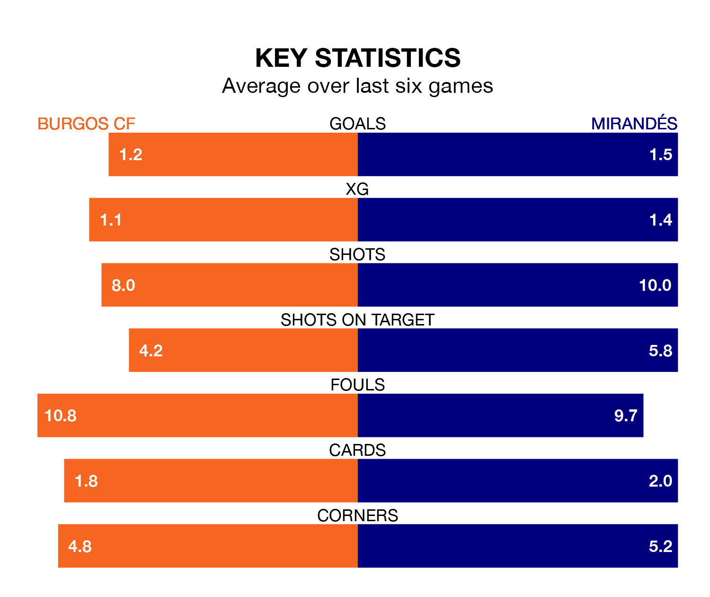

Mirandés travel to Burgos CF on late Saturday in the Segunda División.
The visitors come into the game on the back of a draw in their last match, having tied with Racing Santander 0-0 at home.
Burgos CF, meanwhile, won their last match, 1-0 against SD Amorebieta, with their goal scored by Félix Garreta.
With 27 goals in 18 games so far this season, Mirandés are scoring more than average in the league with 1.5 goals per game. But they are conceding more than average too, letting in 28 goals at a rate of 1.6 per game.
Burgos are also above average scorers, with 1.3 goals per game, compared to a league average of 1.2. They have also conceded 1.3 goals per game.
In Curro Sánchez, Burgos CF have one of the league's sharpest shooters so far this season. He has notched eight goals in 18 appearances, to sit second in the scoring charts.
His goal rate of one every 191 minutes is slightly quicker than that of Carlos Martín, the visitors' top scorer with a goal every 186 minutes, and a total of six goals in 16 games.
In the last 10 years, Burgos and Mirandés have played each other on six occasions. They won two each, and they drew twice.
On average, Burgos CF scored 1.2 goals and Mirandés 1.3 in those matches.
Their last meeting was on April 23, when Mirandés won 2-1 at home.
Mirandés are 14th in the table after 18 games, of which they have won six and drawn five, earning 23 points.
The home side are one place ahead of Mirandés in 13th, with seven wins and four draws putting them on 25 points.
Burgos are in mixed form in the Segunda División, with two wins and three draws from their last six games.
And also with two wins and three draws over that period, the away team's form is identical – they have both taken nine points from 18.
